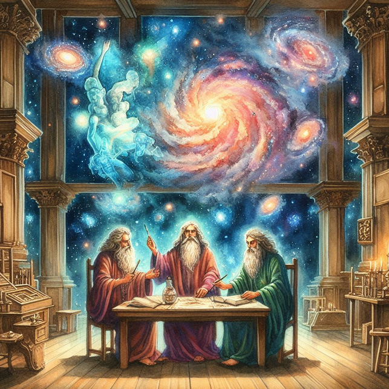

Welcome to Azios!
"The World of the Morning Star"
This is a wiki for a personal worldbuilding project.
"The World of the Morning Star"
This is a wiki for a personal worldbuilding project.
CC BY-NC-SA

People of the Featherscale Isles
The People of the Featherscale Isles are an intensley independent and agricultural people whose culture is distinct from any other in Azios and who inhabit the Featherscale Isles.They have growing seasons year round, have very productive farming techniques, and have been untouched by war in over a century. Their society is hierarchical but with only two hierarchies: commoner and royalty. All of the many hundreds of thousands who live in the isles are commoners with perhaps less than two dozen being considered royalty.
Royalty
The royalty are treated as living divine beings whose commands must be obeyed and who are impervious to legal or social rebuke. This power, however, is not transferable. Bureaucrats and ministers are only as powerful as their ability to convince others to obey their royals. This has resulted in an incredibly egalitarian society for most of the population despite the small handful considered gods.Priest Kings
The royals are known as priest kings. Priest kings can be of any gender and their principle role is performing blessings for the people of the isles. These blessings involve self-inflicted pain corresponding to the type of blessing which is desired. Only those within earshot of the self torture can gain its effects and thus this is how the priest kings also give dictums and laws. The priest kings come from a small collection of royal families which legends say were touched directly by the gods. This is not what gives them the ability to perform the rituals--anyone could perform them--but it makes them the only ones who can do it without taboo. Anyone now of these royal lines performing a ritual is typically executed, though because of the intense pain very few attempt them.The priest kings dress sin flamboyant garbs and elaborate outfits in an attempt to attract spectators. They are never seen wearing plain clothing and each priest king has their own style. Some use taxdermied animals and pelts to adorn their bodies while others create elaborate jewel and feather attires.